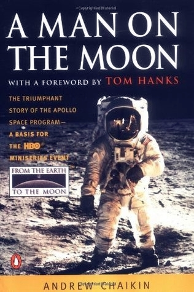

"A Man on the Moon"
- Read on 2021-03-19
- Rating: ️️️️️
- Format: 🎧 (23 hours 0 minutes)
If it were possible to directly inject all videos, audio recordings, photos, and interviews about the Apollo program, that would have been my first choice. This book is a close second. It was wonderfully informative and well-narrated, giving the perfect amount of detail for each of the manned Apollo missions. It sure helps me appreciate so many aspects of what these noble explorers and representatives of humankind did. Additional kudos to the hundreds of thousands of people who helped make these missions possible. Andrew Chaikin did a great job here.